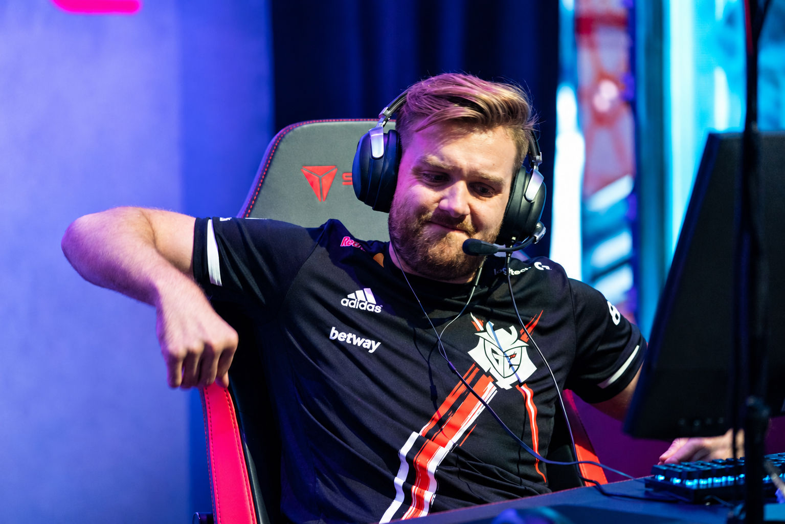
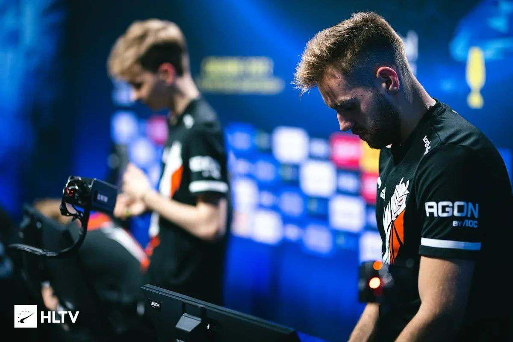
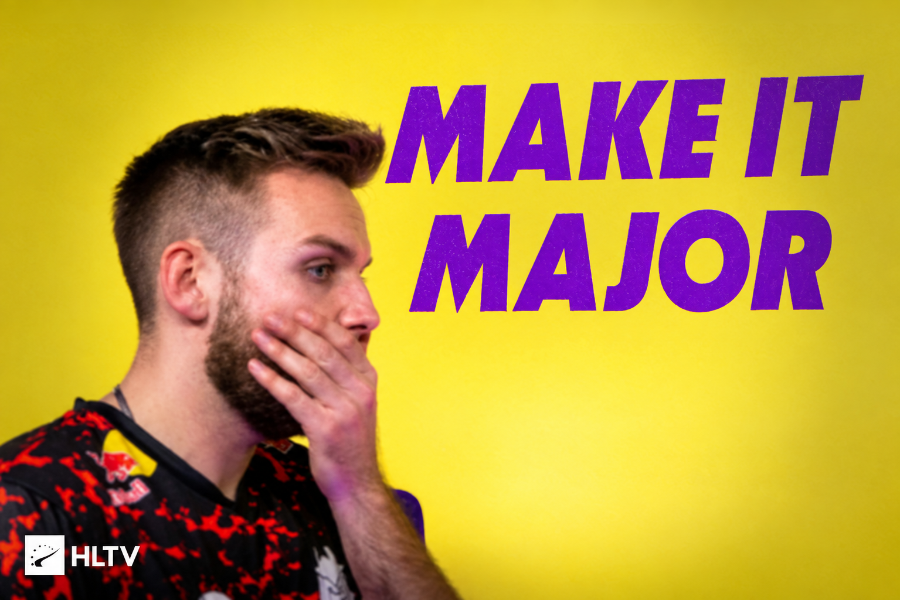

2018 · Boston

一步之遥的雨夜
FaZe 在 Inferno 上距离冠军只差几分。那次被 Cloud9 逆转的决赛，成了 NiKo 整个职业生涯中最难以释怀的起点。那时的他，一定对自己说了那句：Maybe not today。
2021 · Stockholm

三楼沙鹰，宿命的子弹
Nuke 三楼的那三枪，几乎是 CS 历史上最著名的“如果”。面对 NaVi 的决赛，那一发没能击中的沙鹰子弹，让 NiKo 第二次倒在了 Major 决赛的地板上。


2023 - 2024 · 漫长攀爬


低谷、坚持与上海落泪
G2 时期的卡托维兹与科隆双冠，短暂照亮了岁月，但 Major 的魔咒依然存在。2024 上海 Major，半决赛失利后，他独自坐在空荡荡的椅子上，目光久久凝视着那座他追逐了十几年的奖杯。

2026 · Cologne


第 3067 天，破晓
Falcons 3-0 横扫 FURIA。第 17 次 Major，他终于捧起了那座奖杯。12 年，1 座冠军。所有的等待，在这一刻都有了意义。